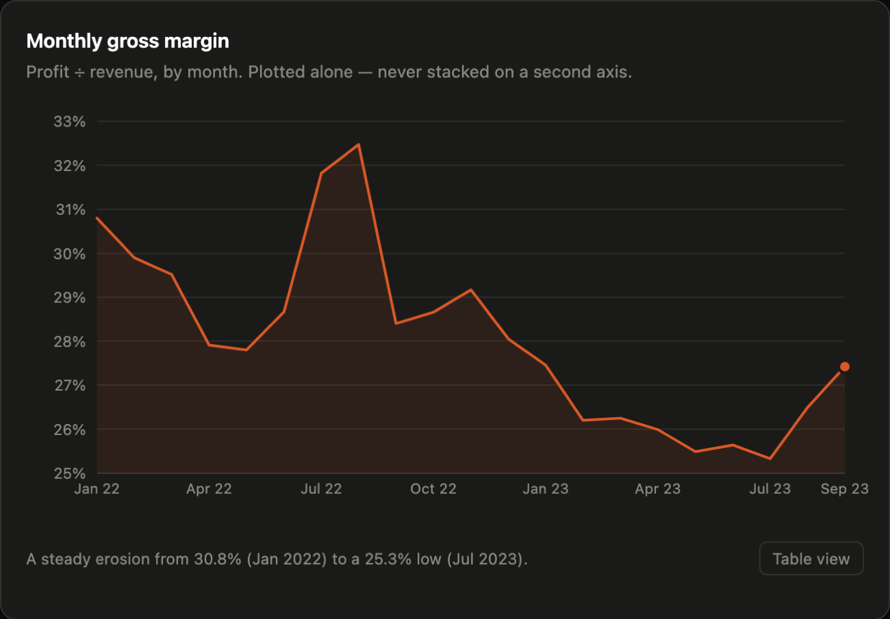
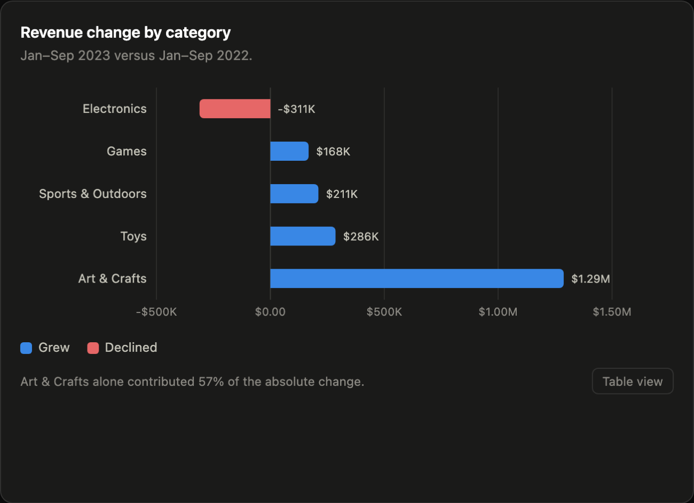

Case study · Margin
Maven Toys México
The entire margin decline was product mix. The rate effect was zero.
- Scale
- 829,262 transaction lines · 50 stores · 29 cities
- Role
- Sole analyst — raw extract to dashboard
- Source
- [[REPLACE: dataset name, link and licence]]
Context
A 50-store toy retailer trading across 29 Mexican cities grew revenue 30.9% year on year. Gross profit grew 16.0%.
When those two numbers separate, somebody has to explain the gap before the next buying cycle — because the explanation decides which department acts. If margins fell because products are being sold at worse margins, that is a pricing problem. If they fell because the shop is selling proportionally more of the cheap stuff, that is an assortment problem. Different owners, different budgets, and the intuitive answer is usually the wrong one.
The data
[[REPLACE: dataset name and link]] — 829,262 transaction lines from 50 stores across 29 cities, joined to a product table carrying cost and retail price, and to a store table carrying location and opening date.
[[REPLACE: what was wrong with it. Strong candidates from a dataset of this shape: stores that opened mid-period and therefore distort a like-for-like year-on-year comparison; SKUs missing a cost and so silently excluded from margin; returns or zero-quantity lines; the number of rows you dropped and on what rule. Say how many rows each issue touched — “0.3% of lines” is a very different statement from “12% of lines”.]]
[[REPLACE: describe the cost join, because it bounds what the bridge can claim. Is cost carried on the transaction line, or on the product record? If it sits on the product record, gross profit is being computed at current cost rather than cost at time of sale — meaning a mid-period cost change is applied retroactively across the whole history. That is worth one honest sentence either way.]]
Approach
Revenue up 30.9%, gross profit up 16.0%, gross margin down 3.35 percentage points. A margin movement has exactly two possible sources: you sold a different mix of things (mix), or you sold the same things at different margins (rate). The first job is to attribute the decline between the two rather than to argue about it.

I ran an exact mix-vs-rate bridge across the category level. The bridge attributed 100% of the −3.35pp decline to mix, with a rate effect of exactly zero: category margins did not move at all. What changed was the weight of each category in the basket.

Art & Crafts grew $1.29M year on year while Electronics fell $311K — a swing of more than $1.6M between two categories that earn very different margins. [[REPLACE: state the gross margin rate of Art & Crafts against Electronics. Those two numbers are the mechanism of the whole finding and a reader will want them here rather than having to infer them.]]
Why an exact bridge rather than reading the category chart. The category chart shows that the mix shifted. It does not show how much of the margin decline that shift accounts for — and “mostly mix” and “100% mix, 0% rate” lead to two different conversations with a buying team. A decomposition that sums exactly to the observed change is falsifiable: if the two effects had not summed to −3.35pp, the method would have told me so. A directional read cannot be wrong, which is precisely what is wrong with it.
Result
All 3.35 points of margin decline attributed to mix. Rate effect: zero.
The chain was buying its growth with margin, and the bridge says precisely how much it paid. That points the fix at assortment and promotional planning rather than at pricing — and pricing is exactly where “our margins are falling” would have sent a team working from intuition. A price response would have been aimed at a rate effect that measurably does not exist.
The monthly series tells the same story over time: a steady erosion from 30.8% in January 2022 to a 25.3% low in July 2023, then a recovery to 27.4% by September 2023. [[REPLACE: was that recovery a deliberate intervention, or mix drifting back on its own? If you know, say which. If you don’t, say that — an unexplained recovery is a finding too, and naming it as open is better than implying you closed it.]]
[[REPLACE: the decision this enabled or the recommendation you made. Be concrete about who acts and on what: a buying team changing category targets, a promotional calendar, a store-level assortment rule.]]
What this cannot show. A mix-vs-rate bridge is an accounting identity, not a causal claim. It says where the margin went; it does not say why the mix shifted. Whether Art & Crafts grew on demand, on promotion, on an assortment decision or on new store openings is a separate question, and this decomposition cannot answer it.